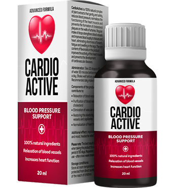

HYPERTENZE A DRAHÉ LÉKY NA TLAK ZŮSTÁVAJÍ V MINULOSTI!
Infarkt a mrtvice jsou příčinou téměř 70% všech úmrtí na světě. Sedm z deseti lidí umírá kvůli ucpání tepen srdce nebo mozku. Téměř ve všech případech je příčinou tak strašného konce tlakové skoky kvůli hypertenzi. `Tichý zabiják` jako je hypertenze zvané kardiology, si každoročně vyžádá životy milionů lidí.
MUDr. Ján Blahovský
Kardiolog, vědec, kandidát lékařských věd, učitel, profesor, akademik. Má pracovní zkušenosti a stáže na univerzitách v různých zemích. Členství v profesních kardiologických asociacích: Newyorská akademie medicíny, Společnost pro kardiovaskulární chirurgii, Společnost pro vaskulární chirurgii a Evropská společnost pro kardiovaskulární chirurgii.
Praxe: 22 roky
O problému:
Není žádným tajemstvím, že kardiovaskulární onemocnění jsou světovými lídry mezi nemocemi, které berou lidské životy. Například hypertenze je hlavní příčinou srdečních záchvatů a mrtvice, které jsou zaznamenány v registru kardiovaskulárních onemocnění. Samozřejmě, tělo je ovlivněno jinými onemocněními, ale je to hypertenze a tlakové změny, které tlačí spoušť, která posílá člověka do jiného světa.
Pokud mluvíme o konkrétních číslech, pak asi 77-78% úmrtí v `přirozených` případech jsou výsledkem hypertenze. V absolutním vyjádření je to asi 1,54 milionu úmrtí v roce 2015 a 1,49 milionu v roce 2014. To znamená, že číslo je opravdu obrovské a děsivé. Až donedávna nikdo nevěděl o rozsahu této katastrofy, protože nebyly provedeny podrobné statistiky a analýzy. V letech 2011 až 2015 jsme shromáždili obrovské množství dat, což vedlo k velmi neuspokojivým závěrům
Tlakové skoky pokaždé způsobují obrovské přetížení srdečního svalu, které dříve nebo později povede k srdečnímu selhání. Zhruba řečeno, pokaždé, když tlak stoupá, to vede k přetížení srdce 10 až 20krát. Pokud mluvíme o konečném vývoji onemocnění, krevní tlak vždy vede ke stejnému výsledku - smrti. Mimochodem, pokud jej označíte za hlavní příčinu smrti, vyskytuje se v 89% případů. To znamená, že v 89% případů končí hypertenze infarktem mrtvicí a smrtí. Navíc, pokud před 20-30 lety pacienti s touto diagnózou měli dobrou příležitost žít ještě 10-20 let, pak nyní asi 2/3 pacientů zemře během prvních pěti let po nemoci.
Zvláště děsí skutečnost, že mnoho lidí si neuvědomuje, že mají hypertenzi. A chybí jim možnost něco změnit, jsou prostě odsouzeni k zániku.
Zde jsou příznaky, které vám pomohou určit, zda máte hypertenzi:
- Bolest hlavy
- Častý srdeční tep
- Černé skvrny před očima
- Apatie, podrážděnost, ospalost
- Rozmazané vidění
- Pocení
- Chronická únava
- Otok obličeje
- Necitlivost prstů a zimnice
- Tlakové rázové vlny
Dokonce i jeden z těchto příznaků by měl přimět k zamyšlení. A pokud jsou dva, není pochyb: máte příznaky hypertenze. Mimochodem, podle statistik 67% všech pacientů s hypertenzí neví, že jsou nemocní.
Jak se bránit a porazit nemoc?
Především byste si měli uvědomit, že se musíte zbavit mnohá špatných návyků, zejména kouření a alkohol. To jen zhoršuje situaci s krevním tlakem. Dalším faktem je, že můžete a potřebujete snížit tlak, jinak neexistuje žádná šance na vyléčení. Ale špatná zpráva je, že i když snížíte tlak, nevyléčí to samotnou nemoc. Navíc, pokud užíváte léky a dojde k prudkému poklesu krevního tlaku, může to způsobit extrémně negativní reakci v těle a také vést k infarktu. Natož, že všechny tablety velmi zatěžují játra.

Ve skutečnosti je v současné době jediným preparát, který se oficiálně doporučuje pro léčbu hypertenze a který používají kardiologové při své práci, Vývoj tohoto preparátu začal před několika lety a stál se velmi úspěšným velmi rychle. Doplněk byl vyvinuty týmem specialistů, kteří úzce spolupracovali s kardiology. Výsledkem je jedinečný preparát, který na rozdíl od všech ostatních preparátu spolehlivě léčí hypertenzi a eliminuje její příčinu.

Odborníci zjistili, že doplněk působí na příčinu onemocnění, takže se můžete zcela zbavit hypertenze. Symptomy se vyskytují v prvních šesti hodinách po použití, což je spojeno s jeho aktivní složkou. To dává příležitost ihned po zahájení kůry, jak se říká, zhluboka se nadechnout.
Tón cév se po průběhu použití kůry zcela obnoví. je tedy účinný ve všech fázích hypertenze. Doplněk samozřejmě prošel klinickými testy. Chci poznamenat, že v procesu testování prokázala lepší účinnost, na rozdíl od zahraničních finančních preparátu. Nejlepší výsledek západních léků je 20-21% vyléčených pacientu. V případě jde o 75-77% vyléčených pacientu. Ve zbývajících 33% případů je stav stabilizován. Neskáče krevní tlak a cítíte se prostě skvěle.
V současné době originální nástroj můžete si objednat vyplněním oficiálního objednávkového formuláře níže.

Koupila jsem to pro babičku, vždycky měla problémy s tlakem. Ona sama pravděpodobně neudělá objednávku online nebo dokonce jen telefonicky. Také jsme se rozhodla to pro ni objednat. Pomohlo to, řekla bych stoprocentně, i když problémy byly dlouhodobé a globální, ona totiž několik let brala velmi silné léky. Ale teď je všechno v pořádku! Díky!


Po použití se cítím mnohem lépe, jako bych omládla. Dokonce i můj vzhled se změnil. Stala jsem se mladší a zdravější.

Je to prostě zázrak! Objednal jsem si hned, co jsme se o něm dozvěděl. Je škoda, že jsem o něm nevěděl před 5 lety, velmi jsem trpěl tlakem, ale teď jsem naživu a i to je dobře! Bylo to, jako bych se znovu narodil! Děkuji mnohokrát.


Poprvé jsem uslyšela o tomto doplňku před zhruba třemi měsíci a objednala jsem si ho. Problémy s tlakem byly hrozné. Ale po prvním dni užívání se tlak ani jednou nezvýšil. Jen si užívám života.